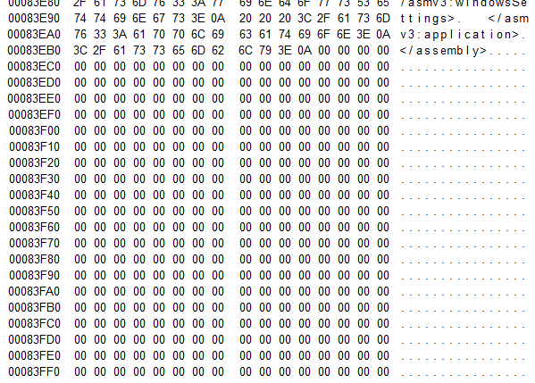

# Code Cave Injector
Resources•
https://0x00sec.org/t/pe-file-infection/401 - Code cave tutorial
◇ Followed this -
http://www.rohitab.com/discuss/topic/33006-detailed-guide-to-pe-infection/•
http://www.codeproject.com/Articles/20240/The-Beginners-Guide-to-Codecaves - Comprehensive
## About
Code caves are blocks of empty space (or null bytes) caused by file alignment of a section’s data.
We can insert our own data/code inside of these empty spaces.
Here is and example of a code cave in
putty.exeCode caves can be exploited by:
1. Inserting your own shellcode into the file
2. Changing the entry point function to the start of your injected shellcode
3. Have the shellcode return to the .text section to resume the original program functionality, which prevents suspicion
Because you're injecting into already-existing blank space, the file size won't increase.
Target program's structure
after infection
+----------------+
| Header |
Original -----> +----------------+ <---+ Return to
start | .text | | original start
+----------------+ | after shellcode
| .rdata | | finishes execution
+----------------+ |
| ... | |
+----------------+ |
| .tls | |
New start ----> + + ----+
at shellcode | (shellcode) |
+----------------+
^ ^ ^
Inject shellcode into
the .tls section
## Building the Injector
The injector will inject shellcode into a code cave in the target application.
Code plan:
1. Map file into memory with read/write permissions
1)
CreateFileW 2)
CreateFileMappingW 3)
MapViewOfFile2. Check if valid PE file
3. Grab original entry point - via
OptionalHeader.ImageBase + OptionalHeader.AddressOfEntryPoint4. Find a big enough code cave to store our shellcode
6. Tailor shellcode to the target application
7. Acquire any additional data for the shellcode to function
8. Inject the shellcode into the application
9. Modify the application's original entry point to the start of the shellcode